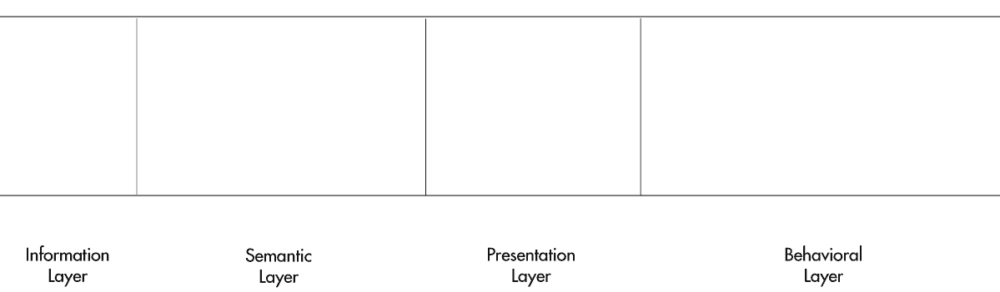
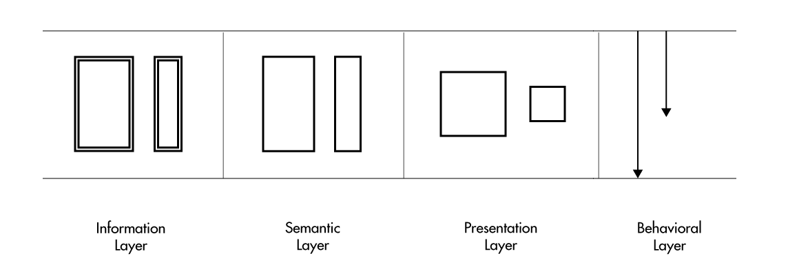
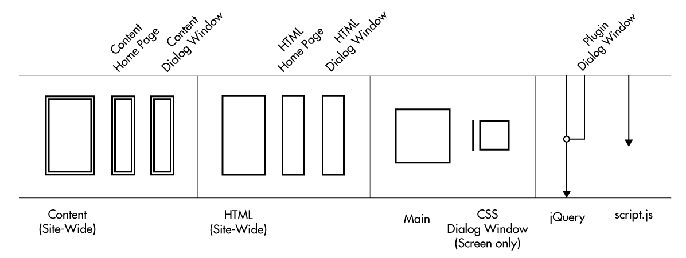
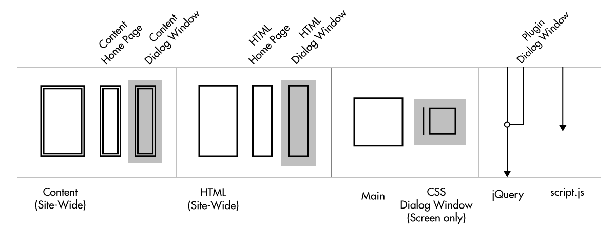
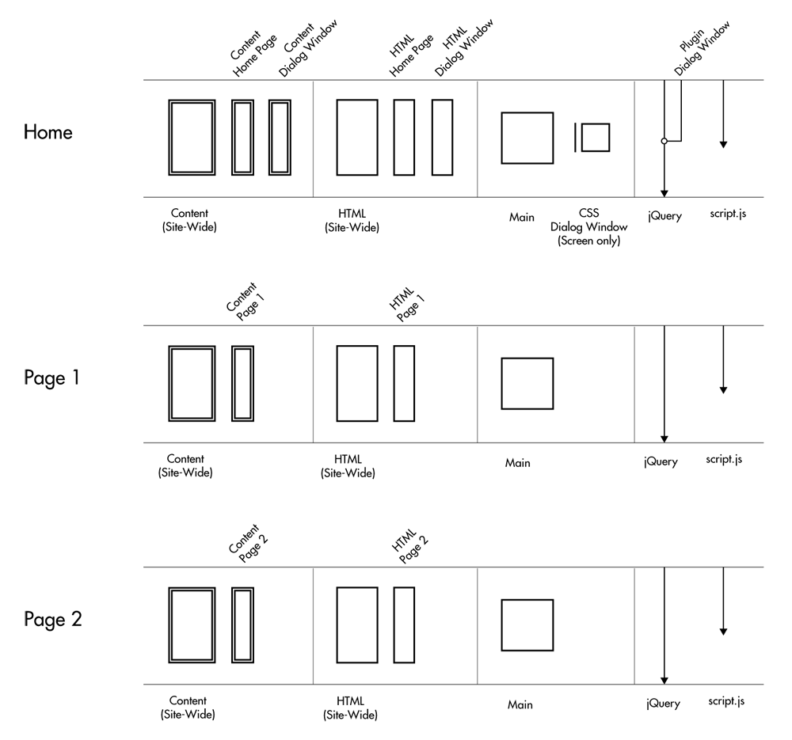
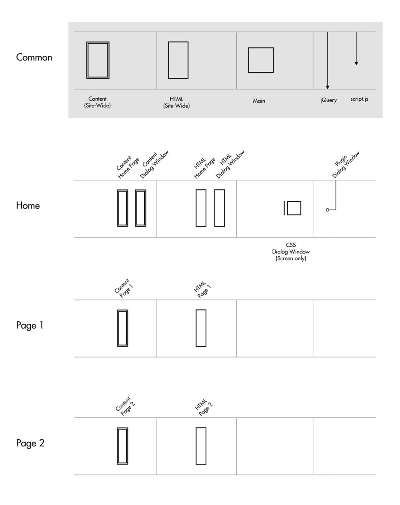
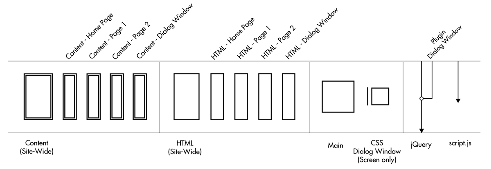
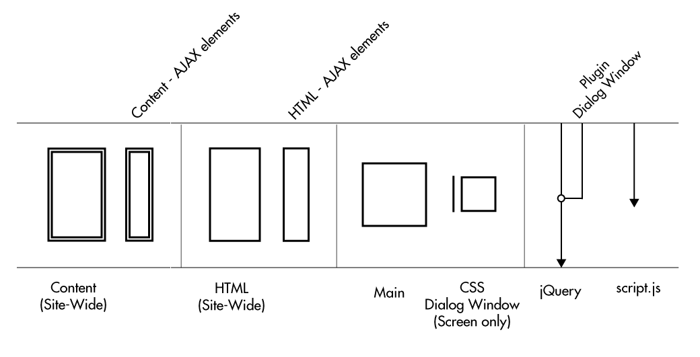

The follow example is based on a number of sketches - May 18, 2012
A few months ago, I did a project that was a single page site. This one was slightly different with the addition of AJAX-inserted content when the user scrolled down the page. In order to do this, I had to think about first building this site as a "low-tech" multi-page version. Then apply programming to create the "high-tech" single page version. Basically, the high-tech version involves taking content from the other pages and inserting into the home page.
How do I build a model of this site? By starting from the beginning,

In the Ottawa model, each distinct page/template is considered a view and displayed in a four-part panel. Each part represents a layer of the whole UI. These are the following:
- Information – content
- Semantic – HTML/microformats
- Presentation – CSS
- Behavioral – Javascript
Each layer has its own set of symbols, representing blocks of code/content. In the graphic below, the larger of each duo is a block (main set of code/content). The smaller versions are related fragments and there are rules that govern how they are applied to each block.

By applying the above items and using some precise, probing questions, I was able to create an initial model of one distinct view (home page)

With each part,
- (Information/Semantic) Both layers are similar in that they contain a block (representing site-wide content/HTML) and page specific fragments.
- (Presentation) One main block and a fragment (additional CSS file)
- (Behavioral) jQuery as base, with plugin (dialog window) and separate JS script

Additional, the plugin has the following parts (viewed via Firebug): 1) separate CSS files (screen media only), and used AJAX to get another page containing 2) separate HTML (Semantic) and 3) content (Information).
With futher examination, the plugin is only used on the homepage. There are two other pages in the site and the views for those are similar without the plugin related items. If we collect the other views together, we now have something that represents the whole web application system.

This set of graphics is detailed for each view. However, it would be better and more concise to just show the most common elements in the system and differentiate each separate view with their distinct contrasting elements. By doing this, we now have the following view

where each view is distinguish by their distinct elements.
Now, the previous system graphics involves the "low-tech", multiple page version. For the "high-tech" version, all these part are reduced down to one page – homepage. Thus, the system model for this comprises of one view

with all the parts combined together.
One feature of the Ottawa model is its ability to either expand to show more details or contract to show less for better clarity. In this case, the Information/Semantic Layer elements can be contracted to

where the AJAX elements of both page/dialog window reduced to a single element.